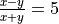
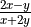
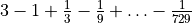
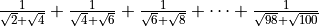
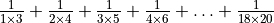
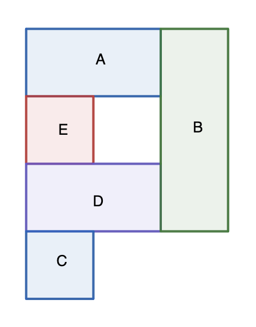
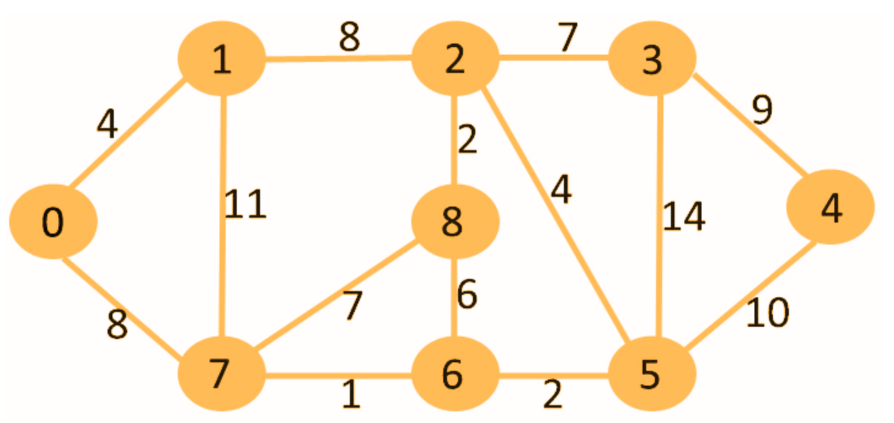

Practice Problems (set C)¶
List out the partitions of 5

. Find
5 cows of type A finish 50 bundles of hay in 5 days. 3 cows of type A and 4 cows of type B together finish 108 bundles of hay in 6 days. How many days does it take 15 cows of type B to finish 150 bundles of hay?
Find

Find

Find

What is decimal 69 in base 5?
Write the recurring decimal as a simple fraction.
In how many ways can 10 Hershey kisses be distributed to three friends such that the first friend gets at least 2 kisses, the second friend gets at least 3 kisses, and the third friend gets not more than 4 kisses?
A triangle has area 30 and perimeter 20. What is its in-radius?
In how many ways can the following house be colored using a maximum of 5 colors is no two adjacent rooms can have the same color?
{kind=link}

The graph below shows cities as nodes and roads between cities as edges. The number on an edge shows the cost to build the road corresponding to the edge. What is least cost for building a road network such that one can travel from any city to any other city either using a road directly connecting the two cities or using a bunch of roads that will take the traveler through other intermediate cities?
{kind=link}
